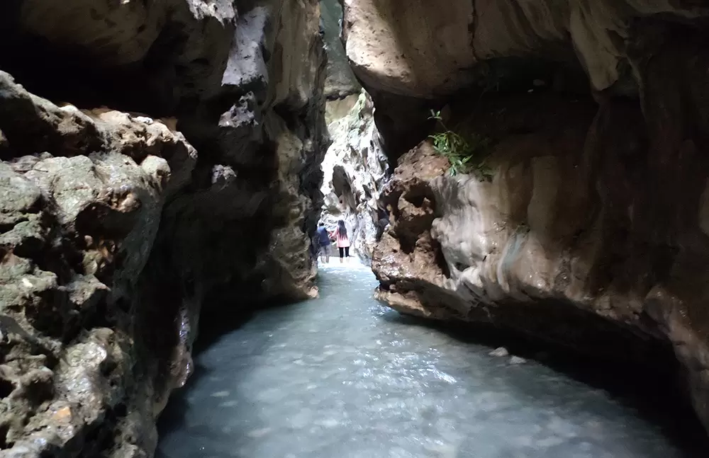
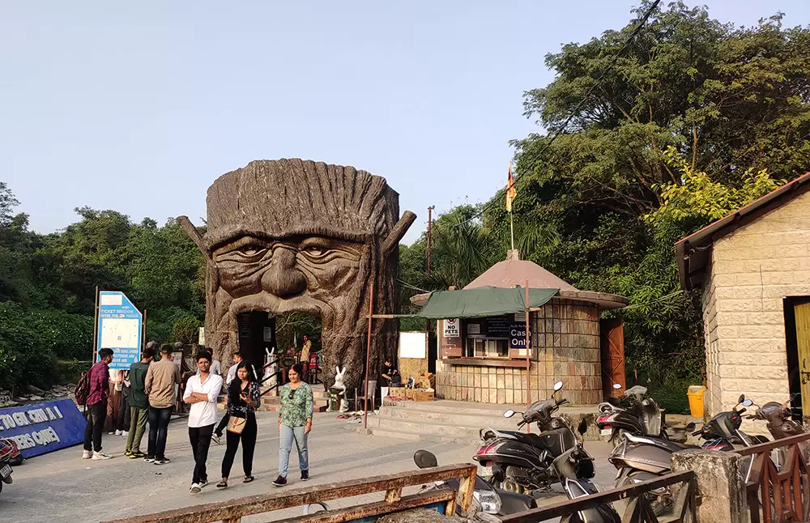
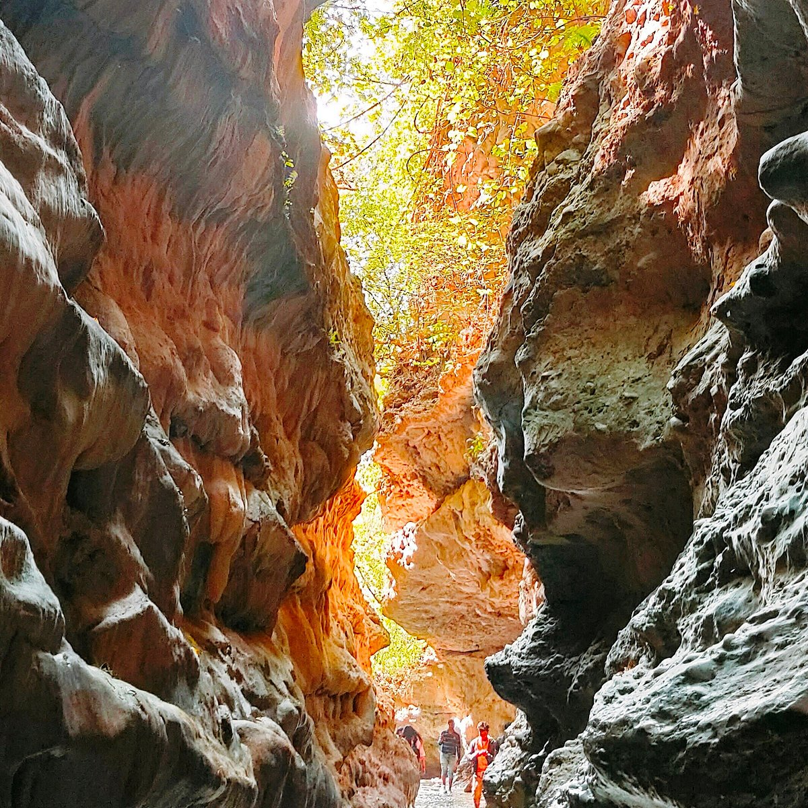
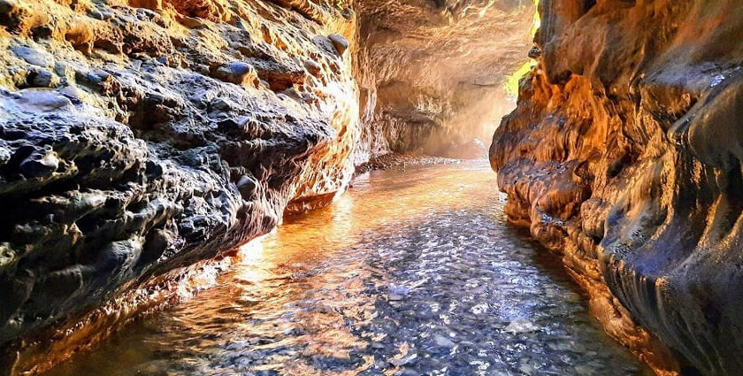

Robber's Cave, locally known as Guchhupani, is one of the most unique and popular natural attractions in Dehradun, located about 8 km from the city center. This fascinating natural cave is formed by a massive rock formation where a seasonal stream flows through a narrow, dark tunnel for about 200 meters before emerging on the other side. The name "Robber's Cave" comes from the legend that robbers once used this hidden cave as a hideout, while "Guchhupani" means "hidden water" in local language — perfectly describing the mysterious underground river that disappears into the rocks and reappears downstream.
Visitors walk barefoot through the shallow, cool water inside the cave, feeling the thrill of the narrow passage, dripping water from the ceiling, and the play of light and shadows on the rocky walls. The surrounding area is lush with greenery, picnic spots, and small shops — making it ideal for families, adventure lovers, and nature enthusiasts. The cave’s dramatic entrance, the sound of flowing water, and the refreshing feel of the stream create a magical, almost otherworldly experience in the Doon Valley.
March to June and September to November for pleasant weather and good water flow; early morning to avoid crowds and enjoy cooler cave temperatures.
200-meter natural cave tunnel with flowing river inside, dramatic rock formations, barefoot water walk, picnic areas, lush greenery, and adventurous thrill.
Wear quick-dry clothes and carry slippers (no footwear inside cave), bring a change of clothes, carry water and snacks, avoid monsoon (slippery & high water), and go early for fewer crowds.
"Robber's Cave is where nature hides a secret river path through ancient rocks — a thrilling, cool, and mystical adventure that whispers legends from the heart of Dehradun."